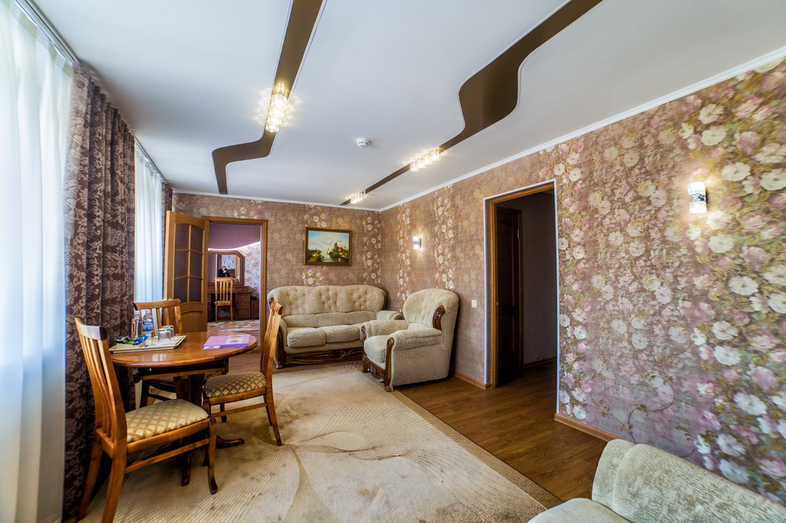

Продолжаем тестировать интернет от Билайн в рамках проекта «Сибирские скорости» и заодно знакомить жителей других сибирских городов с нашим городом.
На очереди — гостиницы.
Гостиница «Кузбасс» расположена в центре Кемерова, на улице Весенняя. Гостиница была построена в 1968 году и внешне это типичная гостиница, которая есть в каждом российском городе. На гостинице нарисованы 3 звезды, но на это, конечно, уже мало кто обращает внимание.
Стоимость номеров составляет от 2650 рублей за одноместный номер до номера под названием «Люкс Статус» за 8000 рублей за сутки. Интересно, кто придумывает названия номеров в гостиницах? Завтрак придётся оплатить отдельно — 350 рублей.
Интерьеры номеров соответствуют названиям.
 Номер «Люкс. Статус». Фото с официального сайта
Согласись, номер «Люкс. Статус» выглядит значительно богаче. Обои, роскошные кресла.
Вообще, я не понимаю, зачем в гостиницах делать цыганский ремонт и свозить всю возможную мебель, но, если бы я разбирался в гостиницах, то вероятно работал бы в одной из них.
Скорость интернета 4G от Билайн близ гостиницы составляет 47,15 мегабит, что устроит большинство командировочных.
Отдельный совет тем, кто встречает командировочных. Если проживание в гостинице вашему гостю непринципиально, рекомендую обратиться к Михаилу, +7 905 995 1001 (по телефону отвечает, как правило, Лариса, мишина жена). Мишу я знаю много лет, и он занимается арендой квартир на сутки. Часто такой вариант бывает отличной альтернативой привычным гостиницам. Квартиры и цены можно посмотреть на сайте.